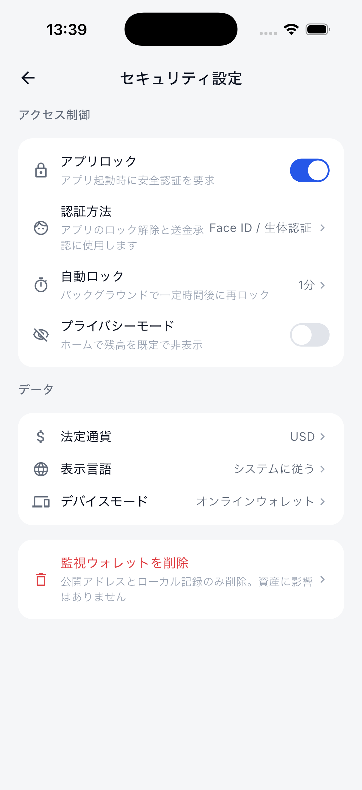
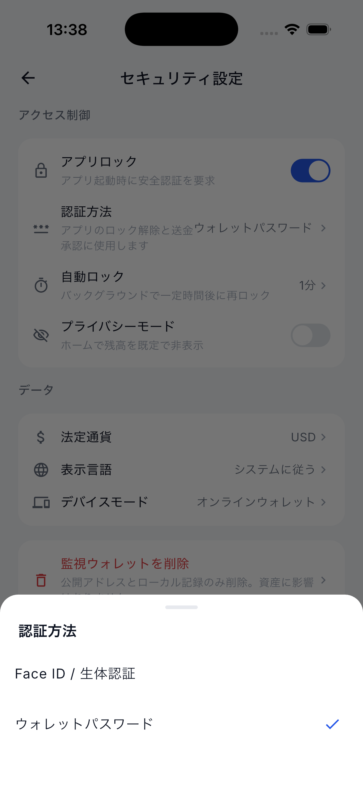
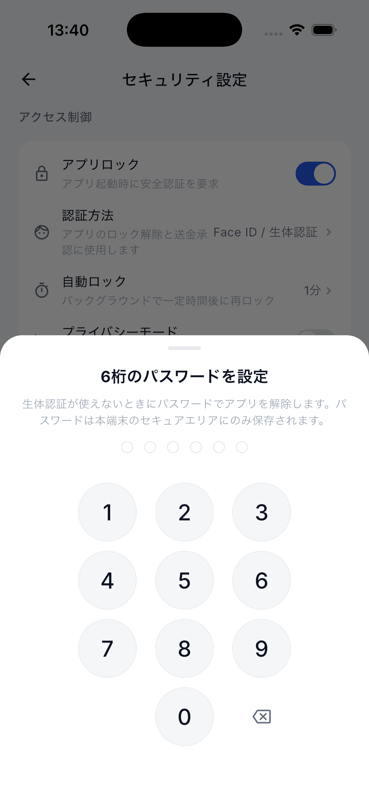
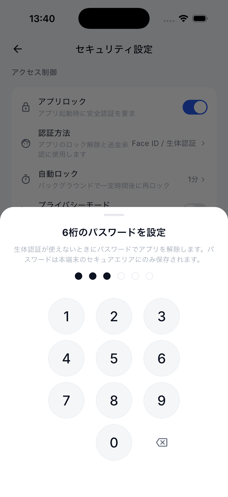
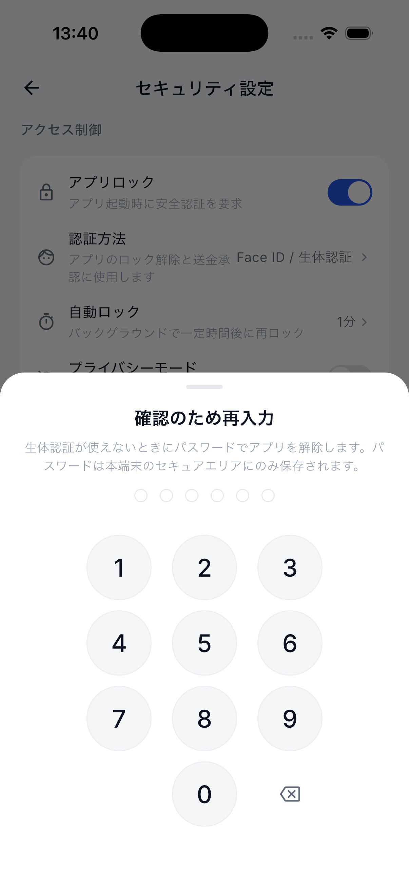
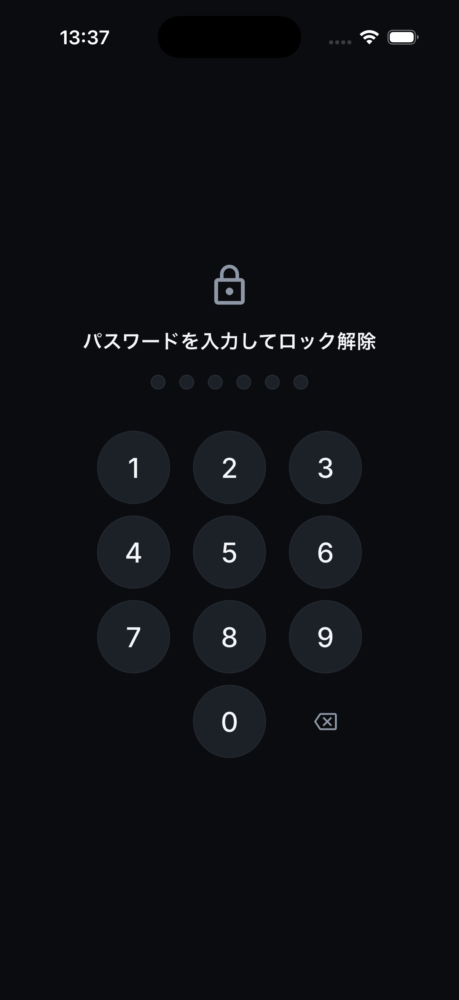
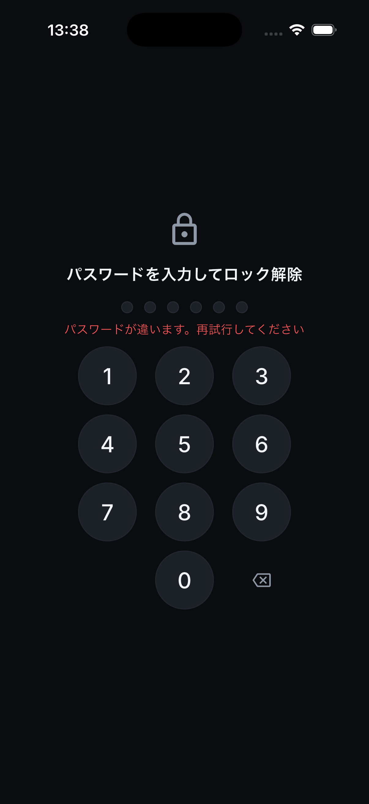
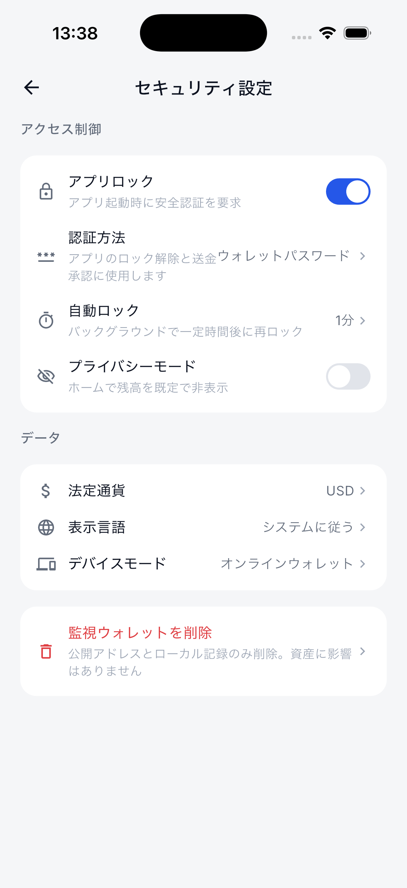

iOS Simulator · Native UI
身份验证测试报告
Face ID / 钱包密码切换、键盘、错误反馈与持久化解锁
2026-07-26 · iPhone 17 Pro · iOS 26.2
Flutter 回归329 / 329
iOS 截图步骤9 / 9
验证方式2 / 2
Golden 页面30 / 30
结论
iOS App 已完成并实机式验收“Face ID / 生物识别”和“6 位钱包密码”两种首选验证方式。设置会持久化；选择密码但尚未设置时，App 自动进入双次确认键盘。重启后直接展示密码解锁页，错误密码不放行，正确密码恢复到安全设置页。
自动化测试结果
| 测试项目 | 结果 | 证据 |
|---|---|---|
| Flutter 单元 / UI / Golden 回归 | 通过 | 329 / 329 |
| 验证方式默认值与持久化 | 通过 | prefs.authMethod = password |
| 密码双次输入与 PBKDF2 校验 | 通过 | 不保存明文；错误次数与锁定状态持久化 |
| App 重启后的密码优先解锁 | 通过 | 未触发 Face ID，直接展示自定义键盘 |
| 错误密码反馈 / 正确密码放行 | 通过 | 错误状态留在锁屏；正确输入恢复 App |
| iOS 测试网签名与广播 | 通过 | Sepolia ETH/ERC-20、Nile TRX/TRC-20、Devnet SOL/SPL 已通过上一轮真实链上确认 |
逐步截图








UI 设计检查
键盘遵循 Emil Kowalski 的高频交互原则：不添加拖慢输入的入场动画；每个按键仅使用 120ms ease-out 轻微缩放反馈。数字、删除键、输入圆点和错误信息形成稳定层级，并提供按钮语义供 VoiceOver 读取。截图使用模拟器系统日语环境，因此同时验证了日文本地化与布局。